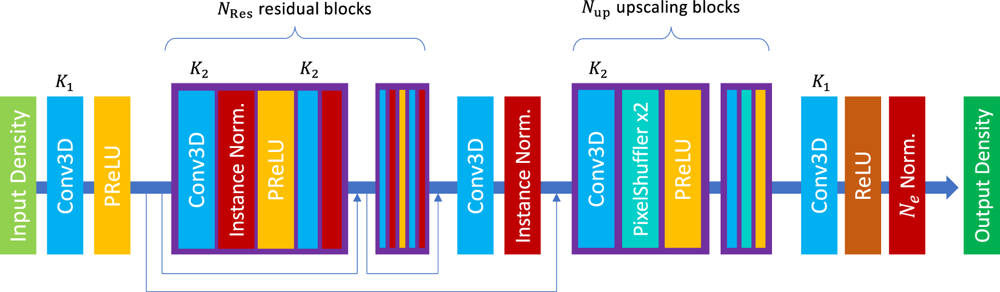
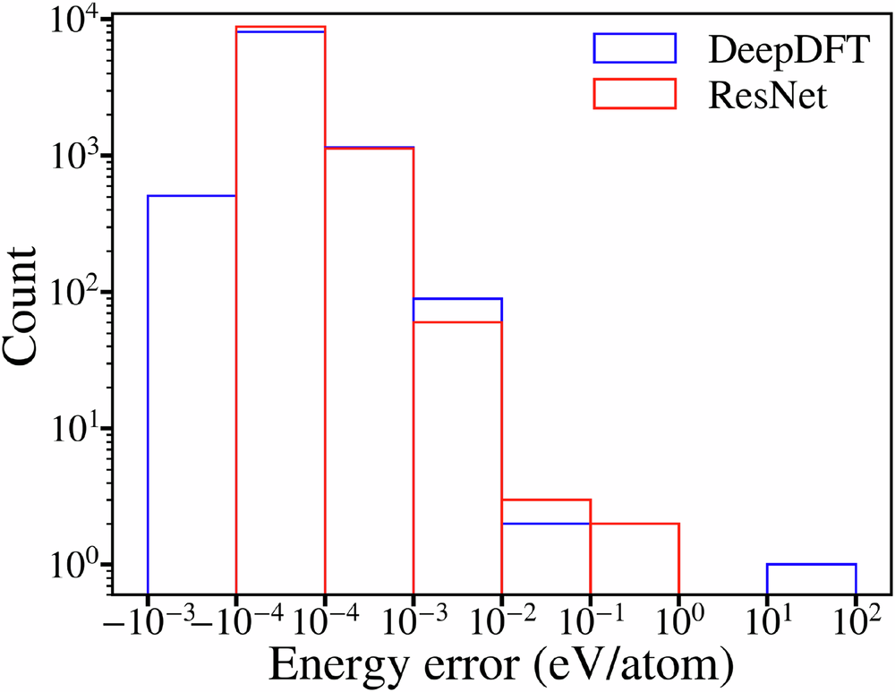
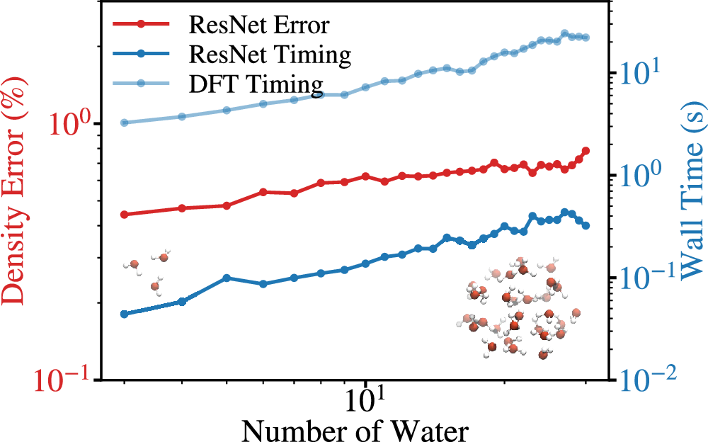
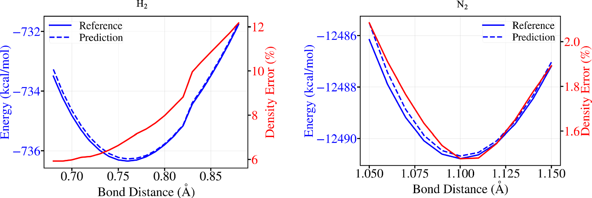
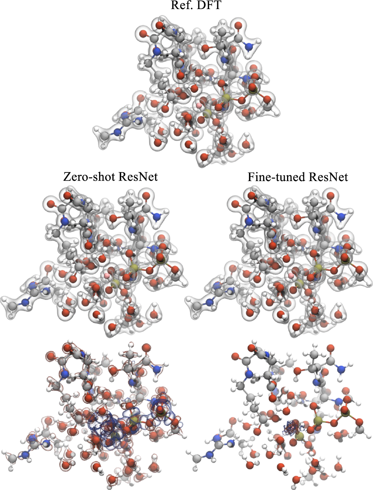

Most machine learning in quantum chemistry is still organized around energies. That makes sense. Energies are what we need for structures, forces, barriers, phase stability, and many workflows that feed directly into simulation. But energy is also a compressed target. It is a scalar that hides almost everything a chemist wants to inspect.
Electron density is different. It is not the full wavefunction, but it is much closer to the object that chemical reasoning actually uses. Bonding, charge transfer, polarization, electrostatics, and localization all leave real-space signatures in the density. The Hohenberg-Kohn theorem gives this statement a formal backbone. For a ground state system, the density determines the external potential and therefore the quantum state up to the usual conditions.
That is why the paper by Li, Sharir, Yuan, and Chan is more interesting than a simple accuracy benchmark. The paper treats electron density prediction as a 3D image super-resolution problem. Start with a crude superposition of atomic densities on a coarse grid. Pass it through a simple 3D residual network. Recover a high-resolution DFT density. Then, when needed, use a single Kohn-Sham diagonalization to get energies and orbitals from the predicted density [1].
I think the important point is not that computer vision can be imported into quantum chemistry. The important point is that this approach chooses the density as the learned object. That changes what the model is useful for. It can support property prediction, but it also gives a real-space field that can be inspected, transformed, and connected to chemistry.
The input is intentionally crude
The model begins from the superposition of atomic densities, or SAD. This is one of the simplest physical guesses one can make. Put neutral spherical atomic densities at the nuclear positions and add them. The result knows where the atoms are. It knows something about atomic size and electron count. It does not know the molecular redistribution that comes from bonding.
That crudeness is the point. If the input already required a semiempirical quantum calculation, then the model would be built on a calculation that can itself become expensive for large systems. Li and coauthors avoid that. The SAD guess only needs tabulated atoms and coordinates. Its cost scales linearly with molecular size [1].
The paper also tests an even worse input, which they call atrocious SAD. The density is spatially contracted by modifying the Gaussian exponents, so it keeps atom positions and relative atom sizes but becomes a poor density. Even then, the model recovers almost the same final density accuracy as it does from ordinary SAD [1].
That result changes how I read the method. The network is not making a delicate correction to a good initial guess. It is using a crude real-space scaffold as a way to encode geometry and chemistry without giving element labels directly. The learned map is doing the hard part.

The accuracy result is strong, but the physical result matters more
On QM9, the SAD density has a large error. The model reduces that error by about two orders of magnitude and reaches roughly 0.16% density error on the test set [1]. Starting from atrocious SAD, the input error is even worse, yet the final predicted error is still close to the ordinary SAD result [1].
The density is not only evaluated as a field. The authors also feed the predicted density into a one-step DFT procedure. They build a Kohn-Sham Hamiltonian from the predicted density, diagonalize it once, and then extract electronic energies and orbital quantities. The electronic energy error is within chemical accuracy, even though the model was trained on density and not energy [1].
This is the part I find most important. The model is not just producing a pretty density. It is producing a density that is good enough to support a physically meaningful downstream calculation. That is a much higher bar than matching an image-like target. If the predicted field gave good pixel errors but failed when inserted into the Hamiltonian, it would be much less useful.

There is also a useful practical observation. Starting from the predicted density reduces the number of self-consistent field iterations needed to converge DFT. The paper reports 5.5 fewer iterations on average relative to ordinary SAD and 10.2 fewer relative to atrocious SAD [1]. That is not the same as replacing DFT, but it is a realistic way density prediction can enter existing workflows.
The transfer tests are the real paper
The QM9 result is impressive, but it is not the most interesting part of the paper. The more useful question is whether a density model can leave the dataset where it was trained.
The first transfer test uses C7O2H10 isomers and conformations sampled from molecular dynamics. These geometries are less like equilibrium QM9 structures. The zero-shot model gets worse, as it should. But the total energy from one-step DFT still stays within chemical accuracy [1]. With fine tuning on only the first two conformations from each trajectory, the model improves substantially on later conformations [1].
The water cluster test is also revealing. The model is trained on single gas-phase molecules, then tested on water clusters from 3 to 30 molecules. The density error grows, but the computational cost remains a small fraction of the DFT calculation, and fine tuning on limited water cluster data pushes the 30-water error down to 0.17% or 0.12% depending on the fine-tuning set [1].

The H2 and N2 scans are a small but useful sanity check. These molecules are not well represented in QM9. The density error is larger than in the easier transfer settings, but the one-step DFT potential energy surfaces remain accurate enough to recover the equilibrium bond lengths within the scan spacing of 0.01 angstrom [1].

Fine tuning is not an afterthought
The strongest transfer example is the microtubule-mediated GTP hydrolysis dataset. This is a much harder system than QM9. It has about 211 atoms on average, a total charge of minus 4, and elements not present in QM9, including phosphorus and magnesium [1].
The zero-shot model struggles. The average density error is 2.1%, and the element-specific error around magnesium is very large [1]. That failure is useful. It shows that the model did not magically learn chemistry outside its training distribution. It learned enough to be useful, but not enough to be trusted without new data.
After fine tuning on only 110 structures, which is 8% of the dataset, the test error falls to 0.33% on the remaining data [1]. Training from scratch on the same small set performs much worse. That is the real foundation-model behavior in this paper. The pretrained model is not universal. It is a strong starting point that can be cheaply specialized.

Why the density target is a useful abstraction
Many machine learning models for chemistry make scalar predictions. That is efficient, but it can also hide failure. If a model predicts an energy, we can benchmark the energy, but we often do not know whether the model learned the right electronic reorganization. A density model exposes more of the mechanism.
In materials discovery, this matters because useful descriptors are often fields. Electron density, ELF, charge-density difference, electrostatic potential, and spin density all contain information that is difficult to compress into a single number. These quantities let us ask chemical questions. Where does charge accumulate. Which voids become electronically active. Which basins connect. Which regions polarize when a defect or surface is introduced.
This is why the paper feels closely connected to real-space materials descriptors. In my own work, the electron localization function is useful because it turns a complicated electronic calculation into a field that supports chemical reasoning. It can show where interstitial electrons localize, whether a metal lattice provides a chemical template, and whether local basins are likely to matter for stability or reactivity. The Li paper pushes in a similar direction, but with the electron density itself as the learned field.
The deeper lesson is that field prediction can be more than a shortcut. It can be a way to preserve interpretability while accelerating electronic structure workflows. A scalar property model can be fast and useful, but a learned density can still be inspected. That gives it a different scientific role.
What I would be careful about
I would not read this paper as saying that simple convolutional networks make symmetry unimportant. The authors are explicit that the model does not enforce the usual equivariances in the same way many molecular graph models do. Instead, the density representation has a useful transformation behavior when the molecule and grid are rotated together, and the training uses rotation augmentation [1].
That is a reasonable choice for the problems tested here. It may not be enough for every materials problem. Crystals add space-group symmetry, periodic equivalences, and origin choices. Interfaces and defects can create large boxes where a uniform grid becomes expensive. If the target is a periodic field in a solid, I would still want symmetry and periodicity treated as first-class constraints.
There is also a distinction between predicting a density and replacing electronic structure theory. Energies and orbitals in the paper still require a one-step DFT diagonalization. That step is much cheaper than a full SCF cycle, but it is not free. The paper also predicts pseudopotential valence densities rather than all-electron densities [1]. For many applications this is completely reasonable. For core-level spectroscopy or all-electron bonding analysis, it is not the final answer.
The most important caveat is the same caveat that shows up in almost every useful materials model. Transfer is not binary. Zero-shot transfer can work surprisingly well inside a related chemical domain, degrade across new elements, and then become strong again after fine tuning. That is not a weakness. It is the operating regime we should expect.
Why this matters for materials discovery
The paper is about molecules, but the idea is very relevant to materials. If we can learn accurate real-space electronic fields from cheap physical guesses, we get a new layer in the discovery workflow. A model can screen structures not only by predicted energy, but by predicted electronic organization.
For high pressure and low dimensional materials, that is especially valuable. These systems often depend on subtle charge redistribution, interstitial states, defect localization, and long-range electrostatics. A field model could help decide which candidates deserve expensive DFT, which structures have interesting void chemistry, or which interfaces are likely to polarize in a useful way.
I also like the possibility of hybrid models. A density model can provide electrostatics and long-range response, while an interatomic potential handles the remaining short-range energetic terms. The paper explicitly points to this kind of direction when discussing water clusters and long-range Coulomb energy [1]. That feels like a more physically natural route than expecting a short-range local model to learn every electronic effect through local messages alone.
What I take from it
The paper is strong because it makes a simple bet and follows it seriously. The bet is that the electron density can be treated as an image-like object without throwing away its physical meaning. The network does not need a complicated handcrafted chemistry representation. It needs a cheap real-space scaffold, enough data, and a target that contains the electronic structure rather than only its scalar consequences.
The approach is not a complete replacement for DFT. It is not a universal zero-shot chemistry engine. It is a practical way to learn a physically meaningful field, reuse it across related systems, and fine tune it when the chemistry changes. That is enough to make it important.
More broadly, I think this is where a lot of useful scientific machine learning will go. Not just faster energies. Not just bigger potentials. Learned fields that preserve the objects chemists already reason with. Density is the natural starting point, but ELF, spin density, polarization, and response fields all belong in the same conversation.
References
- Li, C., Sharir, O., Yuan, S. and Chan, G. K. L. Image super-resolution inspired electron density prediction. Nature Communications 16, 4811. 2025. doi 10.1038/s41467-025-60095-8.
- Hohenberg, P. and Kohn, W. Inhomogeneous electron gas. Physical Review 136, B864. 1964.
- Jorgensen, P. B. and Bhowmik, A. Equivariant graph neural networks for fast electron density estimation of molecules, liquids, and solids. npj Computational Materials 8, 183. 2022.
- Rackers, J. A., Tecot, L., Geiger, M. and Smidt, T. E. A recipe for cracking the quantum scaling limit with machine learned electron densities. Machine Learning Science and Technology 4, 015027. 2023.
Figures 1 through 5 are reproduced unchanged from reference [1]. The article is distributed under a Creative Commons Attribution-NonCommercial-NoDerivatives 4.0 International License.